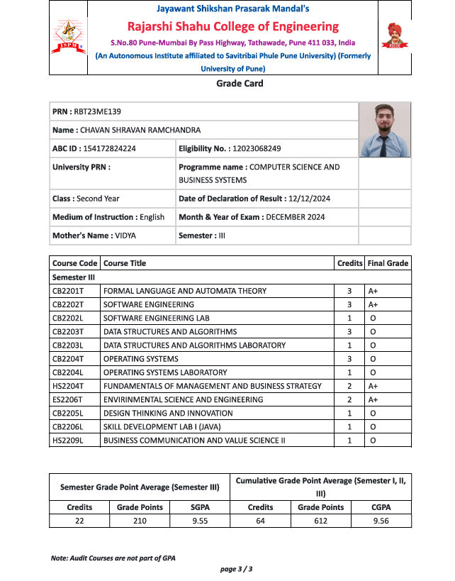
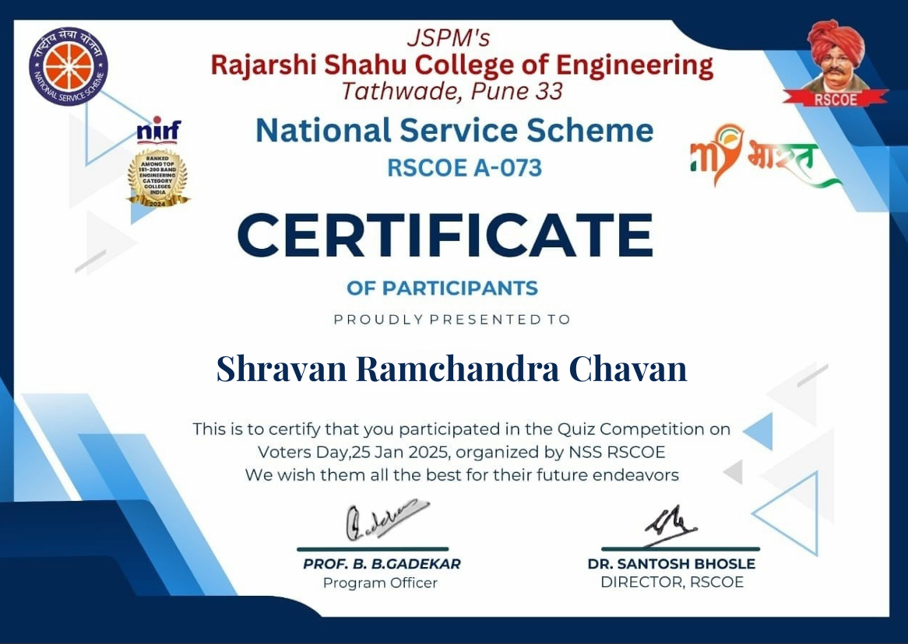
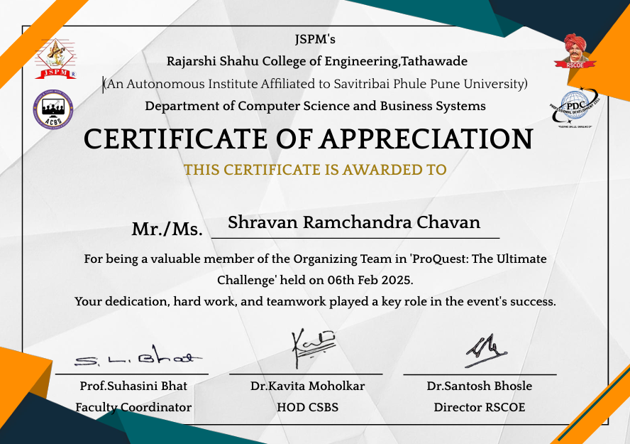
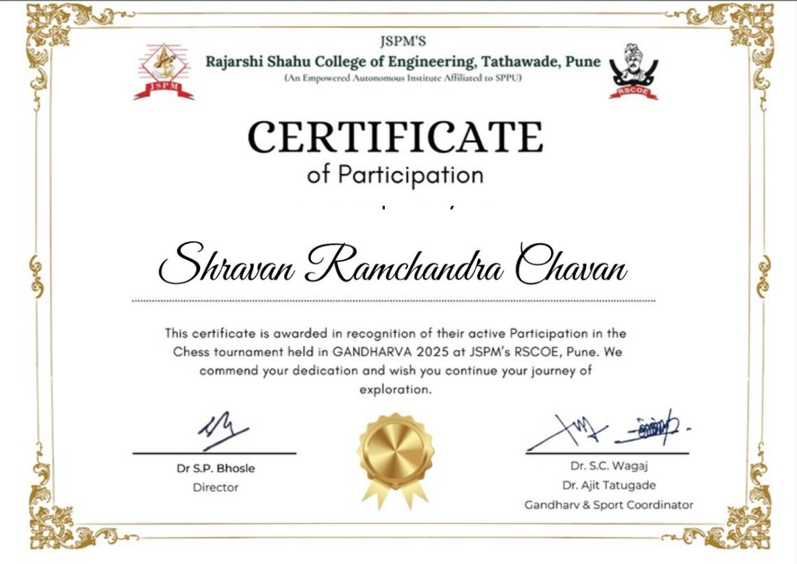

I am committed to academic excellence by consistently producing quality work and seeking opportunities to improve in programming and studies.
1)First:Club Activity
I am currently a member of the Professional Development Club (PDC), where I am part of the event management team. In this role, I contribute to organizing and coordinating events aimed at enhancing students’ professional and technical skills for interviews. This experience allows me to develop my organizational and teamwork abilities while helping peers prepare for the job market. It also gives me the chance to play a role in the growth and success of the club’s initiatives

2)Second: Seminars/Webinars/Quiz/Workshops attended
I participated in a quiz competition on Voter Day, where I tested my knowledge on topics related to voting rights, electoral processes, and civic responsibilities. This experience allowed me to engage with important societal issues while enhancing my general awareness and critical thinking skills. It also provided an opportunity to contribute to raising awareness about the significance of voting and active civic participation.
3)Third: Organizing Roles / Team Contributions
I was a valuable member of the Organizing Team in “ProQuest: The Ultimate Challenge” held on 06th February 2025, where I actively contributed to the smooth planning and execution of the event. This experience helped me strengthen my teamwork, leadership, and organizational skills while collaborating with peers to ensure the competition’s success. It also gave me an opportunity to foster a spirit of participation, encourage healthy competition, and contribute to creating an engaging and impactful platform for knowledge sharing and learning.
4)Fourth: Games & Tournament Participation
I actively participated in the Chess Tournament held during GANDHARVA 2025 at JSPM’s RSCOE, Pune. This experience enhanced my strategic thinking, concentration, and decision-making skills while allowing me to engage in a spirit of healthy competition. It also provided an opportunity to represent my abilities, interact with fellow participants, and further develop discipline and focus through the game of chess.
